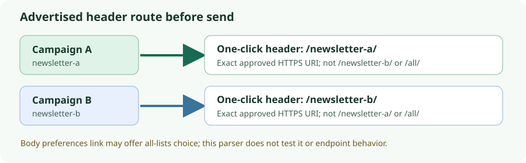

Newsletter A/B · 26 Oct 2026 · executed fictional header check
One-click unsubscribe: check the list route before sending
Decision: compare each final pre-send message's one-click header with a separately approved campaign-to-list endpoint mapping. In this offline fixture, valid A and B messages passed; all nine planted unsafe headers were rejected. This is a local no-send check, not permission to send or proof that any endpoint works.

Expected versus observed
| Fictional message | Observed diagnostic | Exit |
|---|---|---|
| Valid A; valid B | Exact approved A or B HTTPS route and List-Unsubscribe=One-Click post value accepted | 0 each |
| A points to B | wrong_list_route | 2 |
A points to account-wide /one-click/all/ | global_route | 2 |
| Missing unsubscribe URI; missing post header | Corresponding missing-header diagnostic | 2 each |
| Duplicate URI header; duplicate post header | Corresponding duplicate-header diagnostic | 2 each |
| HTTP URI; malformed post value; two HTTPS URIs | Corresponding malformed diagnostic | 2 each |
The checker accepted only exact URIs from the independent mapping. Its global_route label applies to the planted fictional path; an otherwise unknown route fails as wrong_endpoint. The body contains a fictional account-wide preference link even in the valid messages. The checker does not inspect that link.
What to check in a real workflow
- Inspect the installed sender or ESP's campaign, list and unsubscribe settings first. A custom repeated checker is optional if volume warrants it.
- Capture the authorized final pre-send message without external recipients. Compare its campaign identity, single HTTPS one-click URI, and post header against a separately approved A/B mapping. Hold the message when they disagree.
- Keep endpoint behavior and permission as separate gates. An A-shaped URI could still suppress the wrong list; only an authorized sink-only POST and destination-state read-back can test that behavior.
A body preferences page can offer a deliberate all-lists choice. It is not the one-click header route for a particular message.
Reproduce the fictional check
Download the independently specified mapping and expected results, plus message generator, checker, tests, run script and recorded output. In one directory, rename the downloaded files by removing the one-click- prefix, then run:
sh run-fixture.sh > execution.txt 2>&1The script generates eleven CRLF .eml messages, runs two unit tests, checks each declared case and rejects an unknown case. The recorded wrapper exit was 0; the unit tests assert the expected nonzero case exits. This is not a fuzz test or a complete RFC 2369 parser assurance. The generator and checker use Python standard libraries only; they make no network call.
Standards and limits
RFC 8058 §3.1 specifies the one-click headers, including one HTTPS URI identifying recipient and list and the single post key-value pair. §4 requires valid DKIM coverage of both headers; §3.2 describes the receiving system's HTTPS POST. This fixture checked only advertised header text and cardinality. It did not sign or validate DKIM, run a POST or read suppression state.
Gmail sender guidelines distinguish the RFC 8058-style control from a visible body unsubscribe link. The Gmail FAQ describes a list-associated one-click action and says a body preferences link alone is insufficient; Gmail's top-of-message control also depends on eligibility checks. These are documentation statements, not observed Gmail behavior here.
The 16 October Listmonk import-state audit and 24 October two-newsletter reconciliation concern stored preferences and migration hazards, not outbound header behavior. Neither was rerun. This test did not run Listmonk, inspect consent or sender permission, send mail, observe a mailbox control, or establish provider delivery.